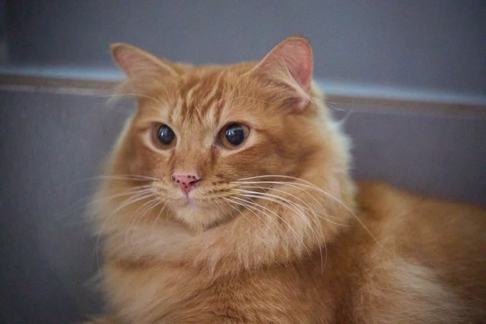

← 猫咪家族
中
EN
JP
橘

长毛橘白 · 憨
QQ橘
QQ Ju · Freckled and Fluffy
橘白长毛公猫 · 鼻尖雀斑 · 玄猫之道新成员
故事正在发生中
QQ橘刚刚加入这个家。
他的故事还没写完——
因为他还在慢慢摸熟每一个房间。
橘白长毛，鼻尖三点雀斑。
是他唯一的心机，也是他全部的可爱。
走到哪讨摸到哪，一见面就认定了你。
✦ 新玄猫加入中...
🐾
加入
玄猫之道最新成员之一，长毛橘白，身形圆润，性格温和亲人，几乎没有戒心。
🟠
鼻尖雀斑
鼻尖上三点浅色雀斑，是他辨识度最高的标记，也是全家公认最治愈的细节。
🫶
团宠体质
没有地盘意识，对谁都一样热情，很快就成了全家和其他猫都愿意接纳的存在。
认识麒麟仔 · 同期新猫
回到猫咪家族